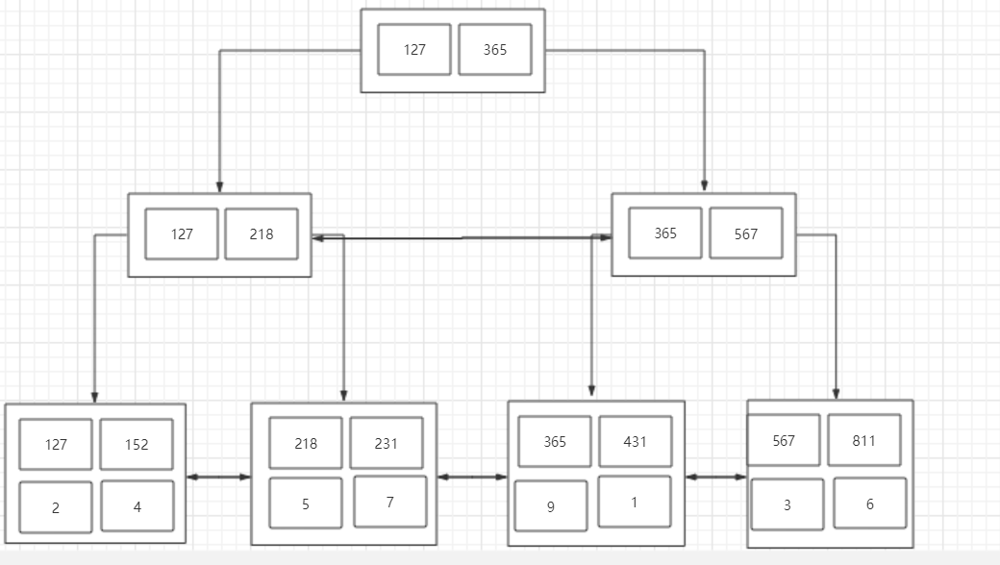

一、前言
上一篇文章介绍了 Innodb 中页与索引相关的知识点。本文接上文，说一下在联合索引中最左匹配原则是如何的。
二、聚簇索引和非聚簇索引
再说联合索引之前，需要先说明一些前置知识 —— 聚簇索引和非聚簇索引。
所谓聚簇索引，就是将索引和数据放到一起，找到索引也就找到了数据，我们刚才看到的B+树索引就是一种聚簇索引，而非聚簇索引就是将数据和索引分开，查找时需要先查找到索引，然后通过索引回表找到相应的数据。InnoDB有且只有一个聚簇索引，而MyISAM中都是非聚簇索引。
2.1 非聚簇索引
MyISAM引擎使用B+Tree作为索引结构，叶节点的data域存放的是数据记录的地址。下图是MyISAM索引的原理图：
这里设表一共有三列，假设我们以Col1为主键，则上图是一个MyISAM表的主索引（Primary key）示意。可以看出MyISAM的索引文件仅仅保存数据记录的地址。在MyISAM中，主索引和辅助索引（Secondary key）在结构上没有任何区别，只是主索引要求key是唯一的，而辅助索引的key可以重复。如果我们在Col2上建立一个辅助索引，则此索引的结构如下图所示：
同样也是一颗B+Tree，data域保存数据记录的地址。因此，MyISAM中索引检索的算法为首先按照B+Tree搜索算法搜索索引，如果指定的Key存在，则取出其data域的值，然后以data域的值为地址，读取相应数据记录。
2.2 聚簇索引
虽然InnoDB也使用B+Tree作为索引结构，但具体实现方式却与MyISAM截然不同。
第一个重大区别是InnoDB的数据文件本身就是索引文件。从上文知道，MyISAM索引文件和数据文件是分离的，索引文件仅保存数据记录的地址。而在InnoDB中，表数据文件本身就是按B+Tree组织的一个索引结构，这棵树的叶节点data域保存了完整的数据记录。这个索引的key是数据表的主键，因此InnoDB表数据文件本身就是主索引。
上图是InnoDB主索引（同时也是数据文件）的示意图，可以看到叶节点包含了完整的数据记录。这种索引叫做聚集索引。因为InnoDB的数据文件本身要按主键聚集，所以InnoDB要求表必须有主键（MyISAM可以没有），如果没有显式指定，则MySQL系统会自动选择一个可以唯一标识数据记录的列作为主键，如果不存在这种列，则MySQL自动为InnoDB表生成一个隐含字段作为主键，这个字段长度为6个字节，类型为长整形。
第二个与MyISAM索引的不同是InnoDB的辅助索引data域存储相应记录主键的值而不是地址。换句话说，InnoDB的所有辅助索引都引用主键作为data域。例如，下图为定义在Col3上的一个辅助索引：
这里以英文字符的ASCII码作为比较准则。聚集索引这种实现方式使得按主键的搜索十分高效，但是辅助索引搜索需要检索两遍索引：首先检索辅助索引获得主键，然后用主键到主索引中检索获得记录。
三、联合索引的最左前缀匹配原则
在MySQL数据库中不仅可以对某一列建立索引，还可以对多列建立一个联合索引，而联合索引存在一个最左前缀匹配原则的概念，如果基于B+树来理解这个最左前缀匹配原则，相对来说就会容易很很多了。
首先我们基于文首的这张表建立一个联合索引：
1 | create index idx_obj on user(age asc,height asc,weight asc) |
我们已经了解了索引的数据结构是一颗B+树，也了解了B+树优化查询效率的其中一个因素就是对数据进行了排序，那么我们在创建idx_obj这个索引的时候，也就相当于创建了一颗B+树索引，而这个索引就是依据联合索引的成员来进行排序，这里是age,height,weight。
看过我之前那篇博客的同学知道，InnoDB中只要有主键被定义，那么主键列被作为一个聚簇索引，而其它索引都将被作为非聚簇索引，所以自然而然的，这个索引就会是一个非聚簇索引。
所以根据这些我们可以得出结论：
- idx_obj这个索引会根据age,height,weight进行排序
- idx_obj这个索引是一个非聚簇索引，查询时需要回表
根据这两个结论，首先需要了解的就是，如何排序？
单列排序很简单，比大小嘛，谁都会，但是多列排序是基于什么原则的呢（重点）？
实际上在MySQL中，联合索引的排序有这么一个原则，从左往右依次比较大小，就拿刚才建立的索引举例子，他会先去比较age的大小，如果age的大小相同，那么比较height的大小，如果height也无法比较大小， 那么就比较weight的大小，最终对这个索引进行排序。
那么根据这个排序我们也可以画出一个B+树，这里就不像上文画的那么详细了，简化一下，现在看一下我们表中的数据：
Mysql 中对应的B+树：

注意：此时由于是非聚簇索引，所以叶子节点不在有数据，而是存了一个主键索引，最终会通过主键索引来回表查询数据。
B+树的结构有了，就可以通过这个来理解最左前缀匹配原则了。
1 | SELECT * FROM user WHERE age=1 and height = 2 and weight = 7 |
毋庸置疑，这条语句一定会走idx_obj这个索引。
那么我们再看一个语句：
1 | SELECT * FROM user WHERE height=2 and weight = 7 |
思考一下，这条SQL会走索引吗？
答案是否定的，那么我们分析的方向就是，为什么这条语句不会走索引。
上文中我们提到了一个多列的排序原则，是从左到右进行比较然后排序的，而我们的idx_obj这个索引从左到右依次是age,height,weight，所以当我们使用height和weight来作为查询条件时，由于age的缺失，那么就无法从age来进行比较了。
看到这里可能有小伙伴会有疑问，那如果直接用height和weight来进行比较不可以吗？
显然是不可以的，可以举个例子，我们把缺失的这一列写作一个问号，那么这条语句的查询条件就变成了?27，那么我们从这课B+树的根节点开始，根节点上有127和365，那么以height和weight来进行比较的话，走的一定是127这一边
但是如果缺失的列数字是大于3的呢？比如427，527，627，那么如果走索引来查询数据，将会丢失数据，错误查询。所以这种情况下是绝对不会走索引进行查询的。这就是最左前缀匹配原则的成因。
这里我们详细的列一下最左匹配原则：
- 最左前缀匹配原则，MySQL会一直向右匹配直到遇到范围查询（>、<、between、like）就停止匹配，比如 a=“3” and="" b=“4” c>5 and d=6,如果建立(a,b,c,d)顺序的索引，d是无法使用索引的，如果建立(a,b,d,c)的索引则都可以使用到，a、b、d的顺序可以任意调整。
- =和in可以乱序，比如 a=1 and b=2 and c=3 建立(a,b,c)索引可以任意顺序，MySQL的查询优化器会帮你优化成索引可以识别的形式。
根据我们了解的可以得出结论：只要无法进行排序比较大小的，就无法走联合索引。
可以再看几个语句：
1 | SELECT * FROM user WHERE age=1 and height = 2 |
这条语句是可以走idx_obj索引的，因为它可以通过比较 (12?<365)。
1 | SELECT * FROM user WHERE age=1 and weight=7 |
这条语句也是可以走ind_obj索引的，因为它也可以通过比较(1?7<365)，走左子树，但是实际上weight并没有用到索引
因为根据最左匹配原则，如果有两页的age都等于1，那么会去比较height，但是height在这里并不作为查询条件，所以MySQL会将这两页全都加载到内存中进行最后的weight字段的比较，进行扫描查询。
1 | SELECT * FROM user where age>1 |
这条语句不会走索引，但是可以走索引。这句话是什么意思呢？
这条SQL很特殊，由于其存在可以比较的索引，所以它走索引也可以查询出结果，但是由于这种情况是范围查询并且是全字段查询，如果走索引，还需要进行回表，MySQL查询优化器就会认为走索引的效率比全表扫描还要低，所以MySQL会去优化它，让他直接进行全表扫描。
1 | SELECT * FROM user WEHRE age=1 and height>2 and weight=7 |
这条语句是可以走索引的，因为它可以通过age进行比较，但是weight不会用到索引，因为height是范围查找，与第二条语句类似，如果有两页的height都大于2，那么MySQL会将两页的数据都加载进内存，然后再来通过weight匹配正确的数据。
为什么InnoDB只有一个聚簇索引，而不将所有索引都使用聚簇索引？
因为聚簇索引是将索引和数据都存放在叶子节点中，如果所有的索引都用聚簇索引，则每一个索引都将保存一份数据，会造成数据的冗余，在数据量很大的情况下，这种数据冗余是很消耗资源的。